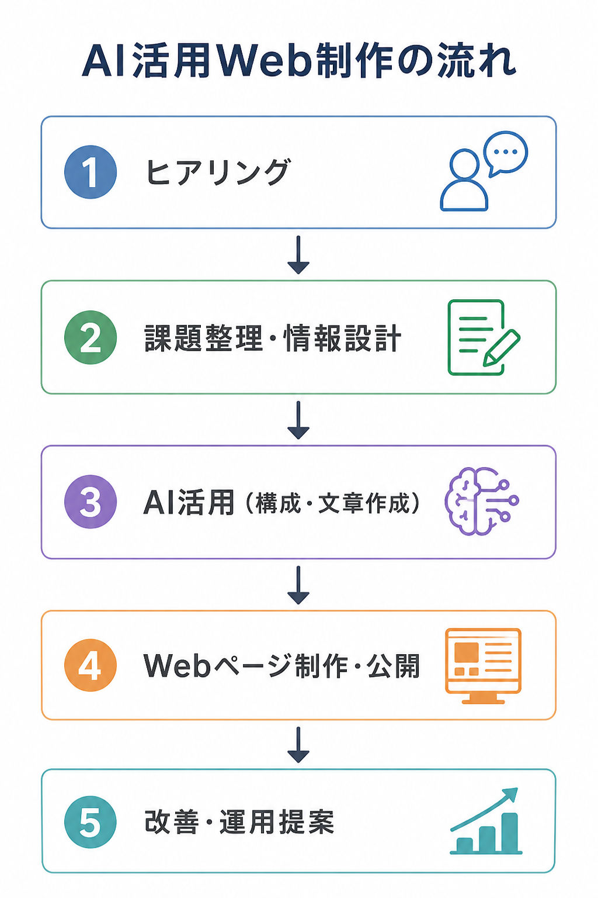

小規模ご相談から対応可能
Zoom / チャット / オンライン対応
Services
できること
AI活用Web制作
ChatGPTや生成AIを活用したWeb制作・LP制作・提案ページ制作。効率的かつ質の高いアウトプットを実現します。
コンテンツ設計
ユーザー視点で情報を整理し、伝わる構成を設計。"何を・どう伝えるか"を丁寧に考えます。
提案・業務整理
クライアントヒアリングから、改善提案・情報整理まで対応。課題を整理し、具体的な解決策を提示します。
Process
AI活用Web制作の流れ

About
自己紹介
図書館司書として約30年、
利用者の"本当に求めている情報"を整理し、伝える仕事に携わってきました。
現在は、生成AI・Web制作・情報設計を組み合わせ、企業や個人事業主向けに、AI活用支援やWebコンテンツ制作を行っています。
単なる制作ではなく、
"伝わる構成"や"整理された情報設計"を重視しています。
Word / Excel / PowerPoint 対応
Zoom・オンライン打ち合わせ対応
ヒアリング・情報整理の長年実務経験
インターネット初期からHP制作経験
Capabilities
対応可能な内容
AI活用型Web制作
LP制作
提案資料制作
AI導入支援
SNS運用支援
業務整理
コンテンツ設計